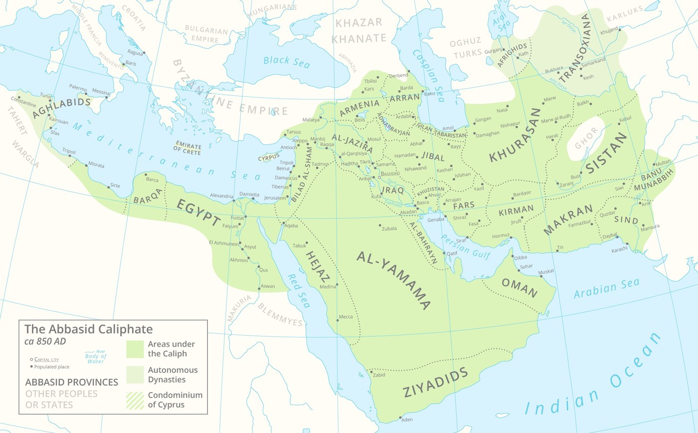
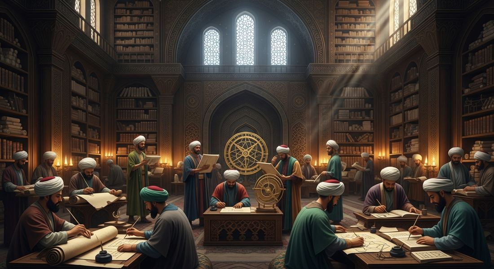

1.2 Developments in Dar al-Islam
- LO-A: Abbasid fragmentation and new Islamic states — The Abbasid Caliphate in Baghdad weakened through the 9th–10th centuries as regional dynasties took real power. The Seljuk Turks took Baghdad in 1055 (keeping the Abbasid caliph as a figurehead), the Mamluk Sultanate ruled Egypt, and the Delhi Sultanate established Islamic rule in northern India. The Mongol sack of Baghdad in 1258 ended the Abbasid Caliphate. Yet Islam did not collapse — it continued to spread, demonstrating that the religion had outgrown any single political structure. Intellectual achievements of the Islamic world —: The House of Wisdom in Baghdad was the world's leading center of scholarship from the 9th–13th centuries. Islamic scholars preserved, translated, and extended Greek, Persian, and Indian knowledge. Al-Khwarizmi's algebra, Ibn Sina's Canon of Medicine, Ibn Rushd's commentaries on Aristotle, and al-Biruni's geographic works were foundational contributions. These achievements spread to Europe — where they sparked the 12th-century Renaissance and contributed to the later Scientific Revolution.
- LO-B: Explain the intellectual and cultural contributions of Islamic… — Sufism and the spread of Islam —: Sufi mystics were Islam's most effective missionaries, spreading the faith into Africa, Central Asia, South Asia, and Southeast Asia through personal devotion, tolerance of local customs, and spiritual practice rather than political conquest. This explains why Islam could expand beyond the reach of any Islamic state.
- LO-C: Explain how Sufism facilitated the spread of Islam… — Role of the ulama —: Islamic scholars (the ulama) maintained religious consistency and legal order across politically fragmented Dar al-Islam. By interpreting sharia and staffing Islamic courts (led by qadis), the ulama provided an institutional backbone that outlasted any particular ruling dynasty.
Try each question before revealing the answer.
1. The Abbasid Caliphate fragmented politically yet Islam continued to spread geographically. What does this tell us about the relationship between political structures and religious expansion?
2. Islamic scholars translated, preserved, and extended Greek and Persian knowledge at a time when much of this learning had been lost in Western Europe. What long-term consequence did this have for world intellectual history?
3. Sufi missionaries spread Islam across sub-Saharan Africa, Central Asia, and Southeast Asia without military conquest. What features of Sufism made it effective in contexts where armies and caliphates had not reached?
4. Three major new Islamic states emerged c. 1200–1450: the Seljuk Turks, the Mamluk Sultanate, and the Delhi Sultanate. What did they have in common as political formations?
5. The Mongol sack of Baghdad in 1258 destroyed the Abbasid Caliphate and reportedly killed hundreds of thousands of people. Why did this catastrophe not stop the spread of Islam?
- Explain how and why states in Dar al-Islam were established, expanded, and maintained
- Explain the intellectual and cultural contributions of Islamic scholars
- Explain how Sufism facilitated the spread of Islam across world regions
Tap a term for its definition.
-
Definition: Arabic for "House of Islam" — the collective term for all territories under Islamic governance or with Muslim-majority populations. Significance: Dar al-Islam was not a single political entity but a cultural and religious zone that stretched from Spain to Indonesia; it provided shared legal, commercial, and intellectual frameworks across this vast space despite political fragmentation.
-
Definition: The third caliphate (750–1258 CE), centered in Baghdad; at its peak the most powerful Islamic state and a global center of learning. Significance: The Abbasids presided over the Islamic Golden Age but fragmented as regional dynasties took real power; destroyed by Mongol invasion in 1258. Its fall demonstrated that Islam could survive without a unified caliphate.
-
Definition: A Turkic dynasty that converted to Islam and conquered much of Central Asia and the Middle East in the 11th century; took control of Baghdad in 1055. Significance: Kept the Abbasid caliph as a religious figurehead while exercising real political and military power themselves; their expansion triggered the First Crusade (1096) when they took Jerusalem.
-
Definition: A series of five Islamic dynasties ruling northern India from 1206 to 1526 CE, founded by Turkic and Afghan warriors. Significance: First major Islamic political power in South Asia; ruled over a Hindu-majority population using a combination of Islamic law and pragmatic accommodation; brought Persian administrative culture, architecture, and learning to India.
-
Definition: A major intellectual center in Abbasid Baghdad (9th–13th centuries) where scholars translated Greek, Persian, and Indian texts and conducted original research in mathematics, medicine, astronomy, and philosophy. Significance: The world's leading scholarly institution of its era; its translations and original works later transmitted Greek learning back to Europe and directly shaped the Scientific Revolution.
-
Definition: A mystical tradition within Islam emphasizing personal, emotional connection to God through devotion, poetry, music, and spiritual practice rather than strict legal observance. Significance: Sufi missionaries were Islam's most effective evangelists, spreading the faith across sub-Saharan Africa, Central Asia, South Asia, and Southeast Asia through flexible, relationally-based methods that accommodated local customs.
-
Definition: Islamic religious scholars who interpret the Quran and hadith, oversee sharia law, and staff Islamic courts as qadis (judges). Significance: Provided institutional continuity across politically fragmented Dar al-Islam; their consistent application of Islamic law gave the Islamic world coherence across dynasties, regions, and centuries.
-
Definition: 9th-century Islamic mathematician at the House of Wisdom whose works introduced algebra (from his treatise Al-Kitab al-mukhtasar fi hisab al-jabr wal-muqabala ) and popularized Hindu-Arabic numerals in the Islamic world and eventually Europe. Significance: The word "algebra" derives from his title; the word "algorithm" from his Latinized name (Algoritmi). His contributions were foundational to mathematics as practiced globally today.
The Abbasid Caliphate: Rise, Fragmentation, and Fall

The Abbasid Caliphate at its peak (c. 850 CE) stretched from Central Asia to North Africa. By 1000 CE, real power had fragmented among regional dynasties while the caliph remained a symbolic figurehead. AI-generated illustration (Google Gemini, 2025), commercially licensed.
In 750 CE, the Abbasid dynasty overthrew the Umayyad Caliphate and established a new center of Islamic power at Baghdad — a newly built city on the Tigris River, positioned to dominate trade routes connecting the Mediterranean to the Persian Gulf and Central Asia. For the next century, the Abbasid Caliphate was the most powerful and cosmopolitan state in the world. Its rulers patronized scholarship, administered an enormous bureaucracy, and presided over a diverse population of Arabs, Persians, Turks, Christians, Jews, and Zoroastrians.
But the empire was too large to govern centrally, and by the 10th century the Abbasid Caliphate had fragmented. Provincial governors became effectively independent rulers. Persian dynasties (the Buyids, the Samanids) controlled eastern territories. By 945 CE, a Persian Shia dynasty (the Buyids) had taken Baghdad itself, keeping the Sunni Abbasid caliph as a religious figurehead while exercising real power.
Into this fragmented landscape came the Seljuk Turks — a Turkic people from Central Asia who had converted to Sunni Islam and built a powerful military empire. In 1055, Seljuk forces took Baghdad, "rescuing" the Abbasid caliph from his Persian captors and establishing themselves as the dominant military power of the Islamic world. The Seljuks governed in the caliph's name, maintaining the fiction of Abbasid authority while running the empire themselves. Their expansion into Anatolia triggered the First Crusade in 1096, when European Christians responded to the new Islamic power controlling access to Jerusalem.
New Islamic States: Mamluks and the Delhi Sultanate
Beyond the Abbasid heartland, new Islamic political formations emerged in the 12th and 13th centuries, each demonstrating Islam's adaptability to new political contexts.
The Mamluk Sultanate (Egypt, 1250–1517) was one of history's most remarkable states. The word "mamluk" means "owned" in Arabic — these were enslaved soldiers, typically of Turkic or Circassian origin, purchased as children and trained as elite cavalry. Under Abbasid practice, these military slaves often became generals and eventually seized power themselves. In 1250, the Mamluks of Egypt overthrew the Ayyubid dynasty (Saladin's successors) and established their own sultanate. In 1260, at the Battle of Ain Jalut (in present-day Israel), the Mamluk army became the first force to decisively defeat a Mongol army in open battle — stopping the westward Mongol advance and earning Mamluk Egypt enormous prestige across the Islamic world.
The Delhi Sultanate (1206–1526) brought Islamic political power to South Asia. Founded by Qutb ud-Din Aybak, a former Mamluk slave-general who had served the Ghurid rulers of Afghanistan, the Delhi Sultanate established a series of Islamic dynasties ruling northern India. The Sultanate governed a Hindu-majority population, required Hindus to pay the jizya (a tax levied on non-Muslims), but generally allowed Hindu religious practice to continue. Delhi became a major center of Islamic culture, with Persian as the language of the court and administration. Sufi missionaries spread Islam into the Indian countryside, often through accommodation with Hindu and Buddhist practices. The Delhi Sultanate represents Islam's entry into a deeply non-Muslim cultural context — and demonstrates how Islamic states adapted their governance to pluralistic realities.
The House of Wisdom: Islamic Intellectual Achievement

An illustration of scholars working in the House of Wisdom (Bayt al-Hikma) in Abbasid Baghdad — the world's leading center of intellectual activity from the 9th to 13th centuries. AI-generated illustration (Google Gemini, 2025), commercially licensed.
The Abbasid Caliphate's most enduring legacy may not be political at all — it may be intellectual. At the House of Wisdom (Bayt al-Hikma) in Baghdad, Abbasid rulers sponsored a massive translation movement beginning in the late 8th century: Greek philosophical and scientific works (Aristotle, Plato, Galen, Euclid, Ptolemy), Persian administrative and literary texts, and Indian mathematical and astronomical works were translated into Arabic and made accessible to scholars across the Islamic world.
But Islamic scholars did far more than preserve what they received. They extended, synthesized, and critiqued these inherited traditions, producing original scholarship that constituted one of history's great intellectual revolutions:
- Al-Khwarizmi (c. 780–850 CE) developed algebra as a systematic mathematical discipline. His treatise title gave us the word "algebra" (al-jabr); his Latinized name gave us "algorithm." He also introduced Hindu-Arabic numerals to the Islamic world — including the concept of zero — which eventually replaced Roman numerals in European mathematics.
- Ibn Sina (Avicenna, 980–1037 CE) produced the Canon of Medicine, an encyclopedic medical text that synthesized Greek, Persian, and Islamic medicine with his own clinical observations. It was translated into Latin and used as a standard European medical textbook until the 17th century.
- Ibn Rushd (Averroës, 1126–1198 CE) wrote extensive commentaries on Aristotle that preserved and transmitted Aristotelian philosophy to medieval Europe, where his work sparked major theological debates. European scholastic philosophy — including Thomas Aquinas — engaged deeply with Ibn Rushd's interpretations.
- Al-Biruni (973–1048 CE) traveled to India and produced a detailed systematic study of Indian culture, religion, science, and geography — arguably the first work of comparative anthropology in history.
- Ibn Battuta (1304–1368/69 CE) traveled more than 75,000 miles across Dar al-Islam and beyond over three decades, producing a travel account (Rihla) that remains a primary source for 14th-century history across Asia, Africa, and the Middle East.
Sufism: Islam's Most Effective Missionary Movement
If Islamic states spread Islam by conquest and governance, Sufi missionaries spread it by personal relationship, spiritual practice, and cultural accommodation. Sufism — the mystical tradition within Islam — emphasized a direct, personal, emotionally resonant connection to God through prayer, poetry, music, and contemplative practice. Sufis believed that formal religious law, while necessary, was insufficient: true faith required inner transformation and personal experience of the divine.
Sufi missionaries were mobile, charismatic, and flexible. When they entered a new community — whether in sub-Saharan Africa, Central Asia, South Asia, or Southeast Asia — they did not immediately demand the abandonment of all local spiritual practices. Instead, they established personal relationships, demonstrated spiritual power through healing and blessing, incorporated local musical and poetic traditions into their devotional practice, and gradually introduced Islamic theology. This approach made Islam feel familiar rather than foreign, accessible rather than threatening.
The results were extraordinary: Sufism was the primary vehicle through which Islam reached the parts of Africa, Asia, and Southeast Asia that no Islamic army had conquered. In West Africa, Sufi brotherhoods built institutions — schools, mosques, trade networks — that spread Islam through the Mali and later Songhai empires. In South Asia, Sufi shrines (dargahs) became pilgrimage sites drawing both Muslims and Hindus, demonstrating how permeable the line between religions could be in practice. In Southeast Asia — particularly in the trading ports of Java, Sumatra, and Malaya — Sufi merchants and teachers converted local rulers whose conversion then influenced their subjects.
The Ulama: Maintaining Coherence Across a Fragmented World
How did Dar al-Islam maintain any coherence across its vast, politically fragmented geography? The answer lies partly with the ulama — the class of Islamic religious scholars who interpreted Quran and hadith, oversaw sharia law, staffed Islamic courts, and educated the next generation of religious leaders.
The ulama provided what no single political ruler could: consistent religious authority across the entire Islamic world. A Muslim merchant traveling from Cairo to Delhi to Malacca could find mosques, qadis (Islamic judges), and madrasas (Islamic schools) that operated according to shared legal and theological principles — even though those cities were in entirely different political systems. The Arabic language, reinforced by the Quran's unchanging text, provided a shared medium of communication for scholars across three continents. Ibn Battuta's ability to travel across the entire Islamic world and find employment as a judge in Delhi, Mali, and the Maldives in the 14th century illustrates this coherence perfectly.
The Mongol Sack of Baghdad (1258) and Its Aftermath
In 1258, Mongol forces under Hulagu Khan (a grandson of Genghis Khan) besieged and sacked Baghdad, killing the last Abbasid Caliph and reportedly burning the House of Wisdom's library. Contemporary accounts described the Tigris River running black with ink from destroyed books and red with blood. Whether or not this is literal, the destruction was catastrophic: the Abbasid Caliphate — the symbolic center of Sunni Islam for five centuries — was gone.
Yet Dar al-Islam survived. The Mamluk Sultanate in Egypt halted Mongol expansion at Ain Jalut (1260). The Mongols of the Il-Khanate in Persia, within a few decades, converted to Islam. The institution of the caliphate technically continued under a puppet Abbasid line in Cairo, maintained by the Mamluks for symbolic purposes. And Sufi missionaries continued to spread Islam into regions the Mongols had not reached. The resilience of Islam after 1258 demonstrates that the religion had become self-sustaining through its merchant networks, scholarly institutions, Sufi orders, and legal frameworks — it no longer needed the Abbasid Caliphate to survive.
Nothing added yet. To attach a Google NotebookLM audio overview, video overview, or infographic to this topic: open this file — build/data/content/ap-world-history/1-2.json — and add an entry to notebookLmResources with a title and a shareable link (or paste an embed <iframe> directly into this block in the generated HTML file if you're editing the page by hand instead).
- The Islamic world was a significant center of intellectual activity that influenced European scholarship
- European learning surpassed Islamic learning by 1100 CE
- Islamic scholars had little interest in preserving non-Islamic texts
- The Arabic language replaced Latin as Europe's scholarly language during the medieval period
- Sufi missionaries offered material rewards that military conquest could not provide
- Sufi missionaries established trade routes that replaced existing commercial networks
- Islamic armies were unable to reach Africa and Southeast Asia due to geographical barriers
- Sufi missionaries' accommodating approach made Islam accessible without requiring rejection of all existing practices
- That Islamic scholarship was entirely dependent on state patronage rather than private intellectual initiative
- That the House of Wisdom focused exclusively on religious texts rather than secular scientific subjects
- That Islamic scholars were passive transmitters of earlier Greek knowledge rather than independent contributors to human learning
- That Abbasid caliphs opposed scientific inquiry as incompatible with Islamic religious doctrine
- The political fragmentation of the Abbasid Caliphate led directly to the decline of Islamic culture and scholarship
- Islam as a cultural and religious system proved more durable than any single political state claiming to represent it
- Regional dynasties that replaced Abbasid authority generally converted away from Islam toward local religious traditions
- The weakening of the Abbasid Caliphate was primarily caused by the Mongol invasions of the 13th century
- Non-Muslims in Islamic societies were legally required to adopt Arabic language and Islamic intellectual frameworks
- Islamic rulers tolerated non-Muslim scholars only when they agreed to convert to Islam in exchange for court positions
- Jewish scholars in Al-Andalus were granted special status above other non-Muslim minorities due to their shared Abrahamic faith
- The Islamic world served as a cosmopolitan intellectual environment where scholars of different religious backgrounds engaged with a shared body of knowledge
Answer parts A, B, and C. Each part requires a separate response. Do not write an essay.
Part A
Briefly describe ONE new Islamic state that emerged as the Abbasid Caliphate weakened, and explain how it maintained Islamic governance.
Part B
Briefly explain ONE way Islamic scholarly achievements influenced intellectual developments in another world region.
Part C
Briefly explain ONE way Sufism facilitated the spread of Islam into a region beyond the original Abbasid heartland.
Write a full essay with thesis, contextualization, evidence, and historical reasoning. This prompt is designed for complexity — you must argue a defensible claim about the extent of the effect, acknowledging evidence on both sides. Historical reasoning skill: Causation / Argumentation.
📝 My Notes (edit this yourself — no AI needed)
This box is yours. Open this page's HTML file directly (in GitHub's editor or any text editor), find the <!-- MY-NOTES-START --> comment below, and type between the markers — corrections, extra context for this year's students, a link, anything. Changes show up as soon as you save and re-publish the file — nothing else on the page will change.
(Add your own notes, corrections, or extra context here.)